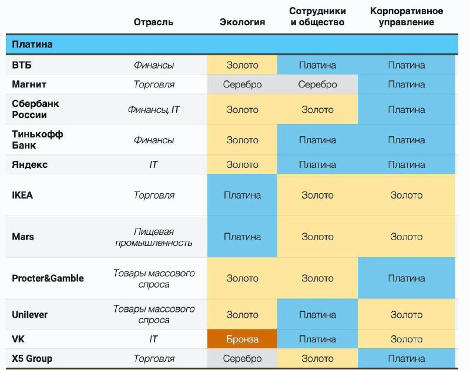

Forbes KPMG bilan birgalikda Rossiyadagi eng yaxshi ish beruvchilar reytingini tayyorladi…

Forbes KPMG bilan birgalikda Rossiyadagi eng yaxshi ish beruvchilar reytingini tayyorladi - lekin odatdagi joylarni taqsimlamasdan, guruhlar toifalarga bo'lingan.
Bu yil nashr ustuvorliklarni yangicha tarzda belgilab berdi:
Bu yil tanlovning asosiy mezoni kompaniyalarning ESG kun tartibi deb ataladigan bo'lib, uchta asosiy ko'rsatkich baholandi: "Atrof-muhit" (E), "Xodimlar va jamiyat" (S) va "Korporativ boshqaruv" (G).
Reytingga yuzdan bir oz ko'proq kompaniya kiritilgan, ammo ulardan faqat 11 tasi "platina" guruhiga kiritilgan. Faqat uchta kompaniya eng yuqori reytingni oldi: Yandex, VTB va Tinkoff Bank - Yandex IT sohasida eng yaxshi ish beruvchi deb tan olindi va VTB va Tinkoff - moliya. Ularning barchasi barqarorlik uchun oltin va xodimlar va jamiyat, shuningdek, korporativ boshqaruv uchun platina oldi.
P/s: Tafakkur qiladigan joyi - istiqbolli soxalarga etibor qiling: Moliya, IT, savdo.🤔